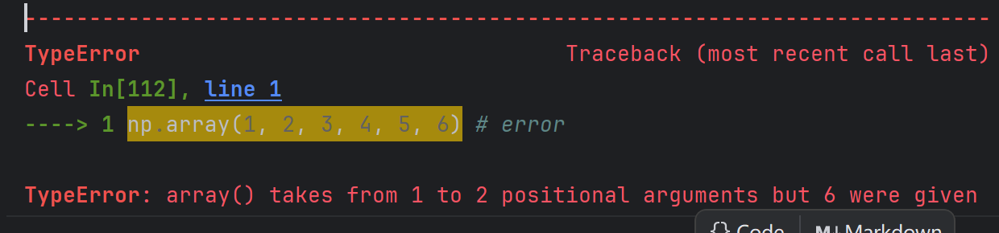

Part 1. ndarray 快速入门
在本节中，我将介绍 ndarray 的入门知识。
学习目标
在完成这一节的学习之后，你将会掌握:
ndarray的创建ndarray的轴和形状等属性ndarray打印与字符串转化ndarray的基本函数与运算ndarray的索引、切片和迭代器ndarray的引用、视图和拷贝ndarray的形状、分割与堆叠
import numpy as np
课程视频
ndarray 的创建
ndarray有多种创建方式，这里只介绍较为常用的几种。
通过数组类型转化
我们可以通过 array() 把其他数组类型(array_like)转化成 Numpy 中的数组，即 ndarray。
例如 Python 中的列表和元组，二者混合也是可以的。如果有多层的话，会将其转为高维数组。
a = [[1, 2, 3], [4, 5, 6]]
b = (1, 2, 3, 4, 5, 6)
c = [(1, 2, 3), (4, 5, 6)]
np.array(a)
array([[1, 2, 3],
[4, 5, 6]])
np.array(b)
array([1, 2, 3, 4, 5, 6])
np.array(c)
array([[1, 2, 3],
[4, 5, 6]])
这里有一个常用的错误是，这里的参数必须传入单个数组或者矢量，而不能传入多个值。错误示例：
# np.array(1, 2, 3, 4, 5, 6) # error

通过函数批量初始化
在有些情况下，我们在初始化的时候并不知道想要初始化的值，或者想要将其初始化为某些特定的值。
如果通过for循环遍历初始化显然有些太慢了，通过函数初始化则是一种更好的选择。
np.zeros((3, 4))
array([[0., 0., 0., 0.],
[0., 0., 0., 0.],
[0., 0., 0., 0.]])
np.ones((2, 3))
array([[1., 1., 1.],
[1., 1., 1.]])
np.zeros 和 np.ones 用于将 ndarray 初始化为全0和全1数组，它接收一个一维元组表示各个维度数组的宽度，即数组在该维度下的元素数量。
np.full((3, 4), 5)
array([[5, 5, 5, 5],
[5, 5, 5, 5],
[5, 5, 5, 5]])
np.full用于将ndarray初始化为全是`fill_value 的数组，它接收两个参数，分别为表示数组形状的元组和初始化的填充值fill_value。
np.empty((1, 2))
array([[0., 0.]])
np.empty用于只知道形状的数组的初始化，它创建的数组的值是未知的。
np.arange(13)
array([ 0, 1, 2, 3, 4, 5, 6, 7, 8, 9, 10, 11, 12])
np.arange类似于 Python 中的range，它可以生成一个数字序列作为一维数组。
ndarray的属性
ndarray 是 NumPy 中的核心数据结构，它有多个属性用于描述数组的基本特征。以下是一些常见的属性：
-
ndarray.ndim
返回数组的维度数。对于一维数组，返回1；对于二维数组，返回2，依此类推。 -
ndarray.shape
返回数组的形状，即数组各维度的大小。对于一个二维数组，它是一个包含行数和列数的元组(rows, cols)。 -
ndarray.size
返回数组的总元素数，即所有维度大小的乘积。 -
ndarray.dtype
返回数组的数据类型（dtype）。例如，可以是int32、float64等。 -
ndarray.itemsize
返回数组中每个元素的字节大小。它是dtype对应的数据类型在内存中占用的字节数。 -
ndarray.nbytes
返回数组占用的总字节数。它等于itemsize * size。
a = np.arange(24).reshape(2, 3, 4)
a
array([[[ 0, 1, 2, 3],
[ 4, 5, 6, 7],
[ 8, 9, 10, 11]],
[[12, 13, 14, 15],
[16, 17, 18, 19],
[20, 21, 22, 23]]])
print("ndim:", a.ndim)
print("shape:", a.shape)
print("size:", a.size)
print("dtype:", a.dtype)
print("itemsize:", a.itemsize)
print("nbytes:", a.nbytes)
ndim: 3
shape: (2, 3, 4)
size: 24
dtype: int64
itemsize: 8
nbytes: 192
这些属性帮助我们了解和操作 NumPy 数组的基本特征和结构，是进行数据处理和分析时的重要工具。
ndarray的打印与字符串转化
在 NumPy 中，ndarray 提供了多种方式进行打印和字符串转换，以便更好地展示数组的内容。
- 打印
ndarray
使用print()函数可以直接打印ndarray对象。例如：
print(a)
[[[ 0 1 2 3]
[ 4 5 6 7]
[ 8 9 10 11]]
[[12 13 14 15]
[16 17 18 19]
[20 21 22 23]]]
- 使用
__str__或者__repr__
print("str:", str(a))
print("repr:", repr(a))
str: [[[ 0 1 2 3]
[ 4 5 6 7]
[ 8 9 10 11]]
[[12 13 14 15]
[16 17 18 19]
[20 21 22 23]]]
repr: array([[[ 0, 1, 2, 3],
[ 4, 5, 6, 7],
[ 8, 9, 10, 11]],
[[12, 13, 14, 15],
[16, 17, 18, 19],
[20, 21, 22, 23]]])
ndarray 的基本函数与运算
NumPy 提供了多种内置函数和运算，便于对 ndarray 进行基本操作。以下是一些常见的函数和运算。
数组的基本运算
- 加法、减法、乘法、除法
对ndarray进行数学运算非常简单，可以直接使用运算符进行加、减、乘、除等操作。
arr1 = np.array([1, 2, 3])
arr2 = np.array([4, 5, 6])
print("+:", arr1 + arr2) # 加法
print("-:", arr1 - arr2) # 减法
print("*:", arr1 * arr2) # 乘法
print("/:", arr1 / arr2) # 除法
+: [5 7 9]
-: [-3 -3 -3]
*: [ 4 10 18]
/: [0.25 0.4 0.5 ]
- 点积（Dot product）
使用np.dot()计算两个数组的点积，即对应元素相乘后求和。
np.dot(arr1, arr2)
np.int64(32)
- 矩阵乘法（Matrix multiplication）
使用np.matmul()或@运算符进行矩阵乘法，适用于二维数组的乘法运算。
arr1 = np.array([[1, 2], [3, 4]])
arr2 = np.array([[5, 6], [7, 8]])
np.matmul(arr1, arr2) # 或者 arr1 @ arr2
array([[19, 22],
[43, 50]])
数组的基本函数
np.sum()
计算数组元素的总和。
arr = np.array([1, 2, 3, 4])
np.sum(arr)
np.int64(10)
np.mean()
计算数组元素的均值。
np.mean(arr)
np.float64(2.5)
np.std()
计算数组的标准差，衡量数组元素的分布情况。
np.std(arr)
np.float64(1.118033988749895)
np.min()和np.max()
计算数组中的最小值和最大值。
print("min:", np.min(arr))
print("max:", np.max(arr))
min: 1
max: 4
np.argmin()和np.argmax()
返回数组中最小值和最大值的索引。
print("argmin:", np.argmin(arr))
print("argmax:", np.argmax(arr))
argmin: 0
argmax: 3
np.reshape()
改变数组的形状，适用于调整数组的维度。
arr = np.array([1, 2, 3, 4])
arr.reshape((2, 2))
array([[1, 2],
[3, 4]])
np.transpose()
转置数组，主要用于二维数组，将行列交换。或者使用ndarray.T也可以达到同样的效果。
arr = np.array([[1, 2], [3, 4]])
print("np.transpose:\n", np.transpose(arr))
print("ndarray.T:\n", arr.T)
np.transpose:
[[1 3]
[2 4]]
ndarray.T:
[[1 3]
[2 4]]
数组的逻辑运算
np.all()和np.any()
检查数组中是否所有元素为True或是否至少有一个元素为True。
arr = np.array([True, False, True])
print(np.all(arr)) # 输出 False
print(np.any(arr)) # 输出 True
False
True
- 元素级的比较运算
可以直接对数组进行元素级的比较运算，如相等、大于、小于等。
arr1 = np.array([1, 2, 3])
arr2 = np.array([3, 2, 1])
print(arr1 == arr2) # 输出 [False True False]
print(arr1 > arr2) # 输出 [False False True]
[False True False]
[False False True]
通过这些基本的运算和函数，你可以高效地对 ndarray 进行各种数学和逻辑操作，进而进行复杂的数据分析和处理。
ndarray 的索引、切片和迭代器
一维数组
一维数组可以被索引、切片和迭代，就像 list 和其他 Python 序列一样。
a = np.arange(12)
a
array([ 0, 1, 2, 3, 4, 5, 6, 7, 8, 9, 10, 11])
a[2]
np.int64(2)
a[2:6]
array([2, 3, 4, 5])
a[2:6] = 100
a
array([ 0, 1, 100, 100, 100, 100, 6, 7, 8, 9, 10, 11])
for i in a:
print(i + 25, end=" ")
a
25 26 125 125 125 125 31 32 33 34 35 36
array([ 0, 1, 100, 100, 100, 100, 6, 7, 8, 9, 10, 11])
其中我们也可以通过输入相同形状的bool数组进行切片。
a[a % 2 == 0]
array([ 0, 100, 100, 100, 100, 6, 8, 10])
多维数组
多维数组的每个轴有一个索引，这些索引以元组的形式给出。
a = np.arange(12).reshape(3, 4)
a
array([[ 0, 1, 2, 3],
[ 4, 5, 6, 7],
[ 8, 9, 10, 11]])
a[2, 3]
np.int64(11)
a[:, 1]
array([1, 5, 9])
当提供的索引维数小于数组的维数时，缺失的索引将被视为完整切片:。
a[1]
array([4, 5, 6, 7])
对于多维数组的迭代，是针对第一个轴进行的。
for i in a:
print(repr(i))
array([0, 1, 2, 3])
array([4, 5, 6, 7])
array([ 8, 9, 10, 11])
如果想要针对单个元素进行迭代，可以将数组展平为一维数组之后进行。
for i in a.flat:
print(i, end=" ")
print("\n")
0 1 2 3 4 5 6 7 8 9 10 11
ndarray 的引用、视图和拷贝
ndarray 的引用
简单的赋值并不会复制对象。
a = np.array(1)
b = a
b is a
True
Python 将可变对象作为引用传递，因此函数调用也不会发生复制。
def f(arr):
return arr is a
f(a)
True
ndarray 的视图
不同的数组对象可以共享相同的数据，这种共享中可以称不持有数据的数组为对应持有数据的数组的视图。
我们可以通过ndarray.view()查看一个数组的视图。
a = np.array([1, 2, 3])
b = a.view()
b
array([1, 2, 3])
这里视图数组并不是原数组的引用，但是他们查看的是相同的数据，视图数组的base属性存储了原数组的引用。
print("b is a:", b is a)
print("b.base is a:", b.base is a)
b is a: False
b.base is a: True
视图数组的视图数组中，其存储的原数组base存储了原数组（即持有数据的数组）的引用，而不是创建视图数组的引用。
c = b.view()
print("c is b:", c is b)
print("c.base is b:", c.base is b)
print("c.base is a:", c.base is a)
c is b: False
c.base is b: False
c.base is a: True
视图中的数组数据更改，原数组中的数据也会被更改。（他们更改的是同一份数据）
b[2] = 100
a
array([ 1, 2, 100])
数组的索引、切片创建的也是数组的视图而并非拷贝，一些方法(例如ndarray.reshape())返回的也是数组的视图。
b = a[1:2]
b
array([2])
print("b is a:", b is a)
print("b.base is a:", b.base is a)
print("b.flags.owndata:", b.flags.owndata)
b is a: False
b.base is a: True
b.flags.owndata: False
b = a.reshape(1, 3)
b
array([[ 1, 2, 100]])
print("b.shape:", b.shape)
print("a.shape:", a.shape)
print("b.base is a:", b.base is a)
b.shape: (1, 3)
a.shape: (3,)
b.base is a: True
ndarray 的拷贝
我们可以通过copy方法对数组进行深拷贝。
a = np.array([1, 2, 3])
b = a.copy()
b
array([1, 2, 3])
print("b is a:", b is a)
print("b.base is a:", b.base is a)
print("b.flags.owndata:", b.flags.owndata)
b is a: False
b.base is a: False
b.flags.owndata: True
此时他们二者持有的是相互独立的数据。
注意: Numpy 的 MaskedArray 在拷贝方面有众多bug，不建议使用。（其实它哪个方面都有众多bug）
ndarray 的形状、分割与堆叠
我们通常将 ndarray.shape 的返回值称作 ndarray 的形状，对于一个 n 维的数组，其形状为一个 n 个元素的元组，其中第 i 个元素表示该数组在第 i 维的宽度。
arr = np.arange(12).reshape(3, 4)
arr
array([[ 0, 1, 2, 3],
[ 4, 5, 6, 7],
[ 8, 9, 10, 11]])
ndarray 的形状的操作
我们可以通过ndarray.shape获取ndarray的形状，并且有多种改变其形状的操作。
arr.shape
(3, 4)
不改变原数组的操作
ndarray.reshape
我们可以通过ndarray.reshape返回当前数组在某个形状下的视图，而不改变原数组的顺序，他们共享一份数据。
arr1 = arr.reshape(2, 6)
arr1
array([[ 0, 1, 2, 3, 4, 5],
[ 6, 7, 8, 9, 10, 11]])
arr
array([[ 0, 1, 2, 3],
[ 4, 5, 6, 7],
[ 8, 9, 10, 11]])
print("arr.shape:", arr.shape)
print("arr1.shape:", arr1.shape)
print("arr1.flags.owndata:", arr1.flags.owndata)
arr.shape: (3, 4)
arr1.shape: (2, 6)
arr1.flags.owndata: False
arr[1,2] = 1000
arr1
array([[ 0, 1, 2, 3, 4, 5],
[1000, 7, 8, 9, 10, 11]])
ndarray.ravel
ndarray.ravel 可以将数组展平为一维数组，其中的默认顺序按照C数组的顺序，也就是越靠后的索引变化越快。ndarray.ravel返回的是视图，也就是说其与原数组共享一份数据。
arr = np.arange(12).reshape(3, 4)
arr1 = arr.ravel()
arr1
array([ 0, 1, 2, 3, 4, 5, 6, 7, 8, 9, 10, 11])
arr1.flags.owndata
False
ndarray.T
对于二维数组，ndarray.T可以返回其转置的视图，其与原数组共享一份数据。
arr = np.arange(12).reshape(3, 4)
arr1 = arr.T
arr1
array([[ 0, 4, 8],
[ 1, 5, 9],
[ 2, 6, 10],
[ 3, 7, 11]])
arr1.flags.owndata
False
改变原数组的操作
ndarray.resize
我们可以通过 ndarray.resize 改变当前数组的形状。
arr = np.arange(12).reshape(3, 4)
arr.resize(2, 6)
arr
array([[ 0, 1, 2, 3, 4, 5],
[ 6, 7, 8, 9, 10, 11]])
ndarray 的分割
我们可以通过np.array_split将数组沿某个轴分割为几个部分。他需要输入三个参数，分别为要分割的数组、分割的位置和分割的坐标轴。
arr = np.arange(12).reshape(3, 4)
result = np.array_split(arr, 2, axis=1)
result
[array([[0, 1],
[4, 5],
[8, 9]]),
array([[ 2, 3],
[ 6, 7],
[10, 11]])]
arr = np.arange(12).reshape(3, 4)
result = np.array_split(arr, 2, axis=0)
result
[array([[0, 1, 2, 3],
[4, 5, 6, 7]]),
array([[ 8, 9, 10, 11]])]
默认的分割并不会发生数据拷贝，分割后的数组并不拥有数据，他们持有相同的一份数据。
result[0].flags.owndata
False
result[0][1,2] = 1000
arr
array([[ 0, 1, 2, 3],
[ 4, 5, 1000, 7],
[ 8, 9, 10, 11]])
ndarray的堆叠
我们可以通过np.concatenate进行数组的堆叠，他与原数组持有不同的数据，相当于执行了拷贝。它需要输入两个参数，分别是堆叠的参数列表和堆叠的坐标轴。这里需要注意的是，除了堆叠的坐标轴外其余坐标轴形状要求相等，这里不考虑“广播”特性。
arr1 = np.arange(12).reshape(3, 4)
arr2 = arr1.copy()
arr = np.concatenate((arr1, arr2), axis=1)
arr
array([[ 0, 1, 2, 3, 0, 1, 2, 3],
[ 4, 5, 6, 7, 4, 5, 6, 7],
[ 8, 9, 10, 11, 8, 9, 10, 11]])
arr = np.concatenate((arr1, arr2), axis=0)
arr
array([[ 0, 1, 2, 3],
[ 4, 5, 6, 7],
[ 8, 9, 10, 11],
[ 0, 1, 2, 3],
[ 4, 5, 6, 7],
[ 8, 9, 10, 11]])
arr[1,2] = 1000
arr1
array([[ 0, 1, 2, 3],
[ 4, 5, 6, 7],
[ 8, 9, 10, 11]])
print("arr.flags.owndata:", arr.flags.owndata)
arr.flags.owndata: True